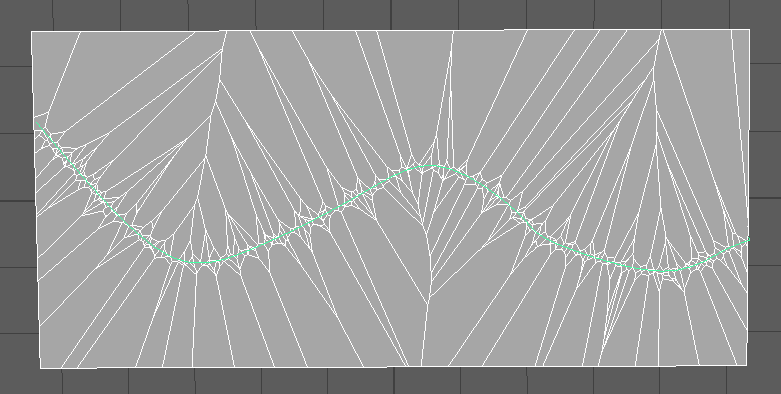

Summary
This is a plugin for Maya that uses Voronoi-diagrams in order to create fractured objects. The plugin is written mainly in C++ and with utilitary functions and GUI creation using Python, as well as some additional MEL-commands where needed. The plugin was created with a main focus on making it artist friendly and with a high level of material adaption that allows for creating a large variety of different breaking scenarios. The plugin was created as part of the course 'SFX - tricks of the trade' at Linköping University in collaboration with Linus Mossberg.
The destruction and breaking of objects are well used simulations in the world of special effects. Even though the subject is well researched, the creation of a framework that breaks objects in a realistic way according to their material is still offering challenges. The utilisation of Voronoi diagrams is a robust foundation in the creation of object fracturing and this project was performed with the aim of creating a well functioning Maya plugin that uses Voronoi partitioning in order to simulate breaking behaviour. The project was further extended with an investigating of how Voronoi diagrams can be used and tweaked in order to achieve breaking behaviours on a material basis by utilising bounding volumes, curves and particle systems.
Technical Walkthrough
This project was carried out over a timeframe of 6 weeks and is based on Voronoi-diagrams. The project aimed at producing a well functioning plugin for Maya and some work consisted of learning the Maya API. Visual Studio was used in order to build the solution and resulted in a .mll file which can be loaded as a plugin into Maya through the Plugin Manager. The thoughts of material adaptation was brought into this project but with a focus on adapting material properties and force distributions such that an artist have the possibility to create a wide range of different materials and simulate their fracturing.
The algorithm used in this project produces an array of fragments which represents the fractured object. One fragment is created for each input seed-point whose Voronoi cell has a non-empty intersection with the input object. This means that the total number of generated fragments is somewhere between 1 and N, depending on the seed-point distribution. The mesh clipping and capping methods uses commands from the Maya API since the project timeframe was not long enough for us to implement every part ourselves and we chose to focus on the material adaptation and optimization of the fracture process.
Clip and Cap methods
The first approach was implemented using the built-in MEL-commands polyCut and polyCutBorder. Besides a mesh, the polyCut commands takes the clipping plane point v(m) and the euler angles between the clipping plane normal n(n) and the z-axis as arguments, and returns the mesh sliced by the clipping plane. The resulting faces on the positive side of the clipping plane is also removed by enabling the additional deleteFaces flag. The clipped mesh is then capped using the polyCloseBorder command.
The second approach was implemented using the MFnMesh::booleanOps function, which performs a selected Boolean operation between two input meshes. Clipping and capping can be performed with this function by generating a mesh that represents the clipping plane, and then by performing the Boolean intersection between the fragment mesh and the generated clipping plane mesh.
The clipping plane mesh was created by first generating a right-handed orthonormal basis for the clipping plane. This was done by first finding an arbitrary vector n(X) that is orthogonal to the clipping plane normal n(n), and then by finding the vector that is orthogonal to both n(n) and n(X) in right-handed order. Through testing, it was determined that the clipping mesh for the legacy version of the booleanOps function can be a simple non-manifold object such as a equilateral triangle polygon.
Optimizations
While the algorithm we had implemented, as described above, worked perfectly fine, it performs many unnecessary mesh clipping and capping operations that makes no difference to the resulting fragment. This is because only the clipping planes closest to the point v(p) ends up creating one of the faces of the resulting fragment. Using this observation, the following two optimizations were made that together reduces the number of mesh clipping and capping operations:
Optimization 1
Before the mesh clipping and capping is performed in the inner loop, all vertices of the fragment f is checked against the clipping plane. This can result in one of the following three scenarios:
- All vertices are clipped
- No vertex is clipped
- Some vertices are clipped and some are not
In scenario 1, the mesh is completely clipped, which means that the fragment can be discarded and the inner loop can be terminated. In scenario 2, the clipping and capping operations would have no effect and the loop can continue with the next iteration. Only in scenario 3 will the mesh actually have to be clipped and capped.
Optimization 2
Before the outer loop is initiated, a separate list of pointers to the seed-points is created. Within the outer loop, the list of seed-point pointers are then sorted by distance to the active seed point in ascending order. This list of seed-point pointers is then iterated through in the inner-loop. The result of this is that the clipping planes closest to the point v(p) is used first, which creates more cases of scenario 2 in Optimization 1.
Point distributions
The seed-point distribution uniquely determines the appearance of the fracture, and it is therefore important to have sufficient tools that can generate a wide range of point distributions. The seed-point distributions should be user controllable, but random at the same time to generate convincing fragments. We used the C++ standard random library was used to randomly sample seed-points, specifically the Mersene Twister pseudo-random generator of 64-bit numbers. This random generator was used in conjunction with various user-guided Maya objects to generate different point distributions.
Example of spherical point distribution within an implicit sphere with set radius.
Example of distribution along a curve.
Other notable point distributions used in this project was disk-distribution, stepped sphere and disk-distribution and distribution determined by a particle system in Maya.
GUI creation
The creation of the graphical user interface was performed through Python code. The Python scripts was defined as C string variables in C++ using raw string literals in order to allow all files to be part of the same solution. The GUI scripts were further integrated in the project through MGlobal::executePythonCommand in the initialization and uninitialization process.
In order to achieve a plugin for Maya that is easily integrated, the first step of the GUI creation was to add a new menu bar in the main window bar in the viewport. This menu was designed as a generic class in Python with the instance variables as name, label, number of sub-menus and its connections to functions. The design was made in order to achieve scalability for the plugin in the future and more submenus was to be added. In the initialization of the plugin it is possible to define a menu with the number of submenus needed in this project as well as connect the corresponding function to call when pressing each submenu.
A menu window was then created for interaction with the Voronoi fracturing and it was designed as a pop up window that launches when the user press the button in the submenu from the menu bar. The creation of the menu window was specifically designed to be for the Voronoi fracturing plugin but with utilisation functions for creating meshes and removing all objects in a scene. The functionality involves GUI buttons, sliders and drop-down menus that can add meshes to the scene, restore the scene and alter the properties of the Voronoi fracturing such as the number of fragments to split the mesh into. It also allows for easy integration for an artist with direct paths to the curve tool and particle systems through buttons. The instance variables for the class involves dimensions, title, number of fragments, curve radius, disk axis, number of steps, step noise and the minimum distance between points.
A screenshot of the GUI for the plugin.
Material Renders

A uniform bounding box distribution of points to simulate the breaking of stone.
Point distribution along a curve to simulate heat fracture in asphalt.

The same distribution as above but after fracture propagation and seen from another angle.
Point distribution around a sphere to simulate a high impact force striking a glass window.